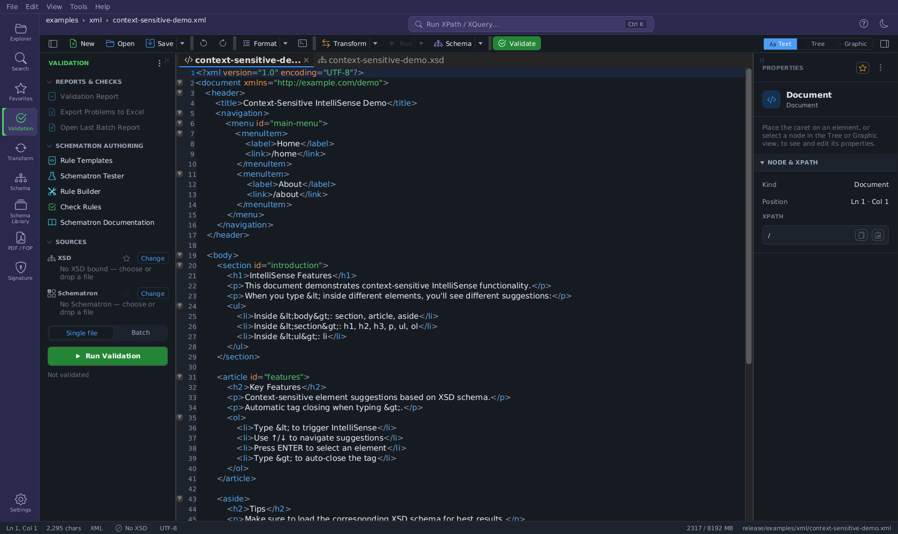
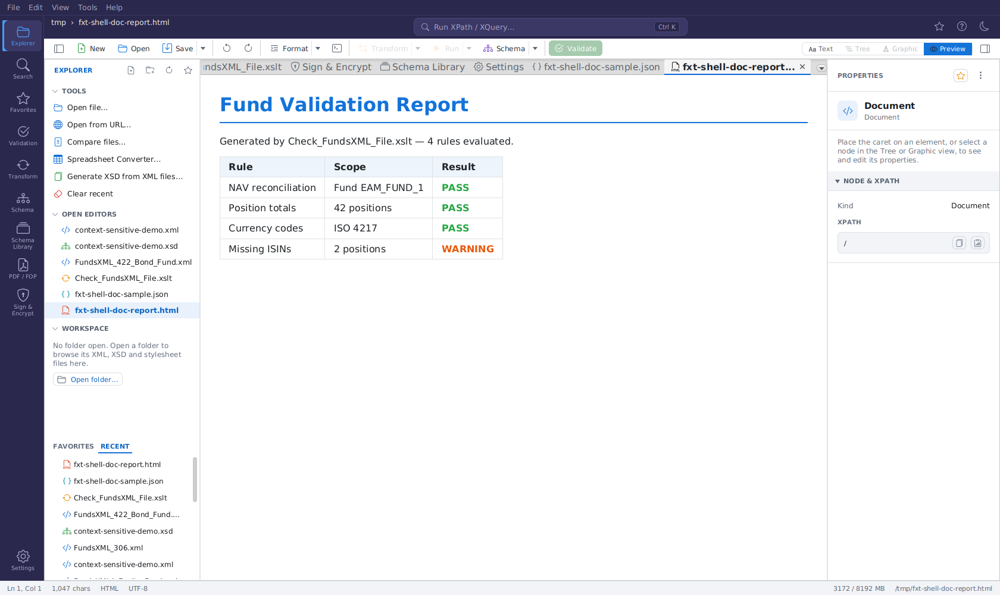
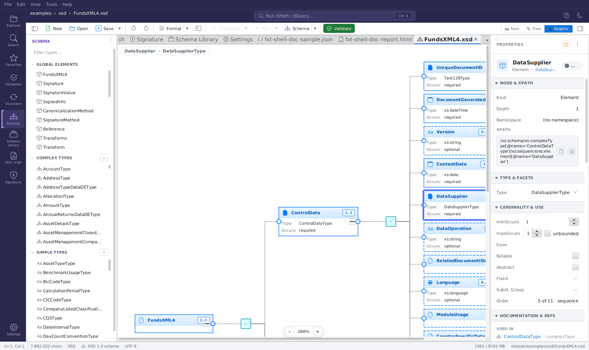
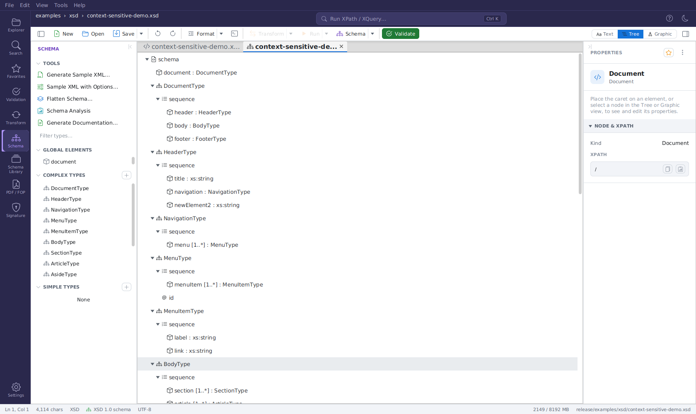
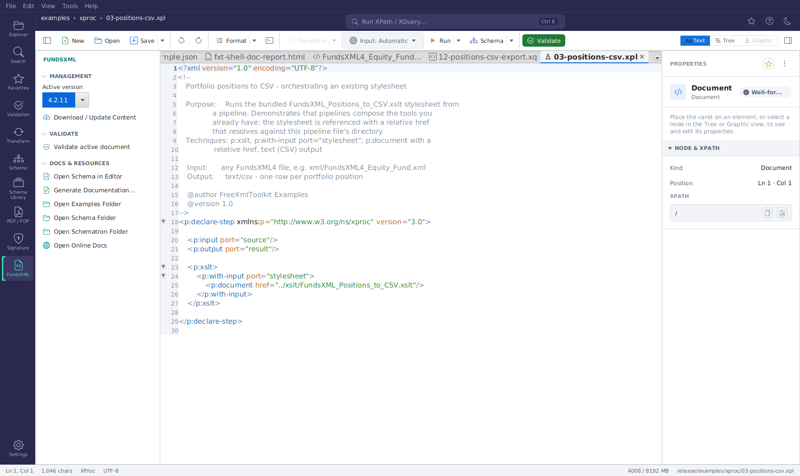
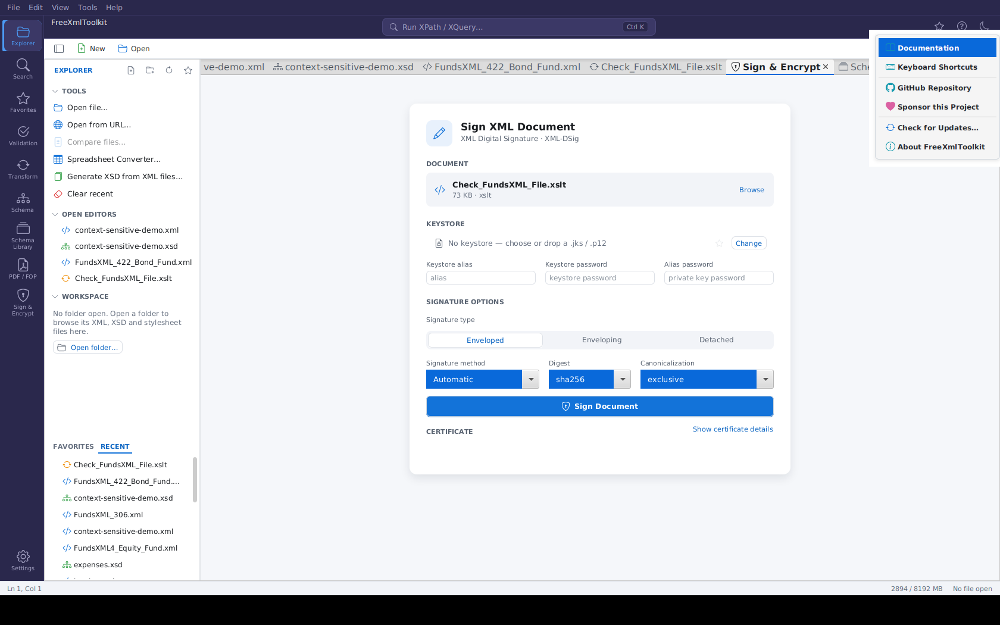
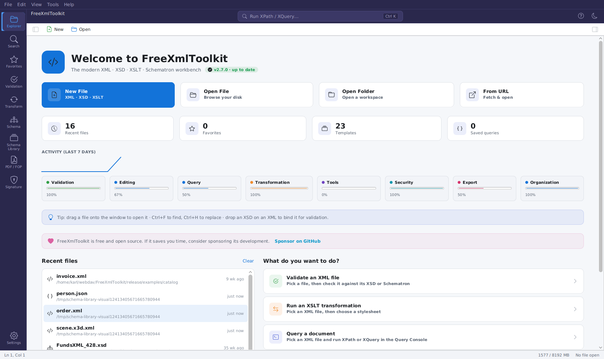
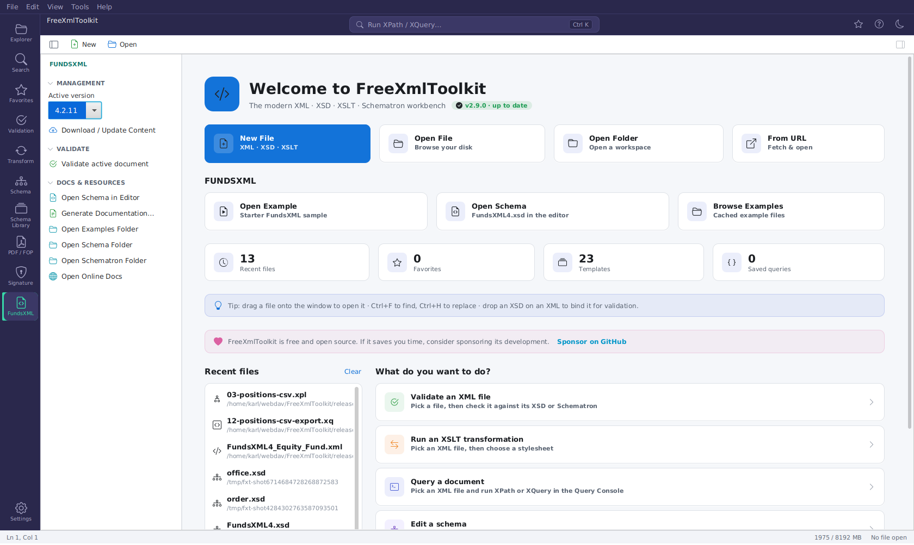

Unified Shell¶
The application opens directly into the Unified Shell - one workspace that combines XML, XSD, XSLT, XProc, Schematron and JSON editing with all the validation, transformation, signing and documentation tools. The separate legacy tabs have been consolidated here.
Overview¶
The Unified Shell is the single workspace for everything FreeXmlToolkit does. Instead of switching between separate editor pages, you open files as tabs in the central editor host and reach every tool through the activity bar on the left. You can work with an XML file next to its XSD schema, XSLT stylesheets and Schematron rules at the same time.

 The Unified Shell: activity bar (left), Explorer side panel, editor host with an XML file
(Text/Tree/Graphic view toggle), the Properties inspector (right) and the status bar.
The Unified Shell: activity bar (left), Explorer side panel, editor host with an XML file
(Text/Tree/Graphic view toggle), the Properties inspector (right) and the status bar.
Layout¶
| Area | Purpose |
|---|---|
| Activity bar (far left) | Switch tools / side panels: Explorer, Search, Favorites, Validation, Transform, Schema, Schema Library (its label wraps onto two lines), PDF/FOP, Signature, Settings - plus a FundsXML activity when the optional FundsXML extension is enabled (see FundsXML Panel). Always visible - it cannot be collapsed. (Settings, Schema Library and Signature open as a full page in the editor area - see Settings Page, Schema Library Page and Signature Page. Help is not an activity - it is the Help menu, see Help Menu & About.) |
| Menu bar (very top) | File / Edit / View / Tools / Help - every action of the toolbar, the Activity Bar and the keyboard shortcuts in one place (see Menu Bar). On macOS it is the system menu bar at the top of the screen. |
| Header bar (top) | The breadcrumb (application / active file), a centered search pill ("Run XPath / XQuery…", shortcut Ctrl+K) that opens the bottom Query Console when clicked, the ? button (opens the Help menu as a popup - same as F1) and the Theme button. |
| Side panel | The panel for the selected activity (e.g. the Transform panel, the Validation panel). Resizable and collapsible (see Resizing and collapsing the side panels). |
| Editor host (center) | Tabs of open documents, each with the Text, Tree and Graphic view modes - plus a rendered Preview for HTML documents (see View Modes). |
| Inspector (right) | View and edit the selected node's properties from any view. Resizable and collapsible (see Resizing and collapsing the side panels). Hidden automatically while a page without a document (Settings, Schema Library, Signature, reports, tool tabs) is selected. |
| Status bar (bottom) | Caret position (Ln/Col), character count, file type, the XSD / IntelliSense indicator, the encoding label (the charset the file was read in and is saved in, e.g. UTF-8 or ISO-8859-1), the last recorded run (Developer feature), a memory indicator and the active file's path (see Status Bar). |
Resizing and collapsing the side panels¶
Both the left side panel and the right Properties inspector can be resized and collapsed to give the editor more room - the activity bar always stays visible.
Resizing - the panels are not fixed-width:
- Drag the thin divider line between a panel and the editor to make the panel wider or narrower (the mouse pointer turns into a horizontal resize arrow over the divider). Widen the panel when file names, validation messages, or property values get truncated.
- Each panel keeps a minimum width of 200 px, and the editor in the middle always keeps at least 320 px - you cannot drag a panel so far that the editor disappears.
- The chosen widths are remembered across restarts (per user).
- When you resize the window, the panels keep their pixel width - only the editor column grows or shrinks (the same behavior as VS Code).
Collapsing - each panel can also be hidden completely:
- Collapse: click the discreet collapse button at the panel's inner edge (a chevron
pointing at a bar:
|<on the left panel,>|on the inspector). The panel is hidden completely. - Re-open: click the matching toggle button in the editor toolbar (left-most toggle, a sidebar icon, for the side panel; right-most toggle, a mirrored sidebar icon, for the inspector) - the same mechanism on both sides. Selecting any activity from the activity bar also re-opens the left side panel. A re-opened panel comes back at its last dragged width.
- The collapsed/expanded state is remembered across restarts and can also be changed under Settings → Appearance → LAYOUT ("Show left side panel" / "Show Properties (inspector) panel").
- The inspector only appears next to documents. When you switch to a tab that is not a document - Settings, Schema Library, Signature, a report or another tool tab - the inspector hides automatically, so the page gets the full width. Its toggle button is greyed out on such tabs. As soon as you select a document tab again, the inspector comes back. Your own show/hide choice is not changed by this - if you had hidden the inspector, it stays hidden.
Key Features¶
- Multi-tab editing - Open multiple files of different types in one view
- Automatic file type detection - Files are recognized by extension (.xml/.wsdl, .xsd, .xsl/.xslt, .xpl/.xproc, .xq/.xquery/.xqm/.xqy, .xpath, .sch/.schematron, .json/.jsonc/.json5, .html/.htm/.xhtml); anything else opens as plain text
- View modes per document - Text, Tree and Graphic, all over one shared model, plus a rendered Preview for HTML documents (see View Modes)
- Inspector editing everywhere - edit node properties from the Text, Tree and Graphic views, not just one
- Type picker with explanations - the inspector's Type field and Change Type… in the diagram and tree context menus list the schema's own types and every XSD built-in datatype, and a side pane explains the highlighted one (see Choosing a type)
- Integrated XPath/XQuery - a bottom Query Console queries the active XML/JSON file right from the editor (Ctrl+Shift+X)
- Editor toolbar actions - run Validate, Transform, Run, Generate Documentation and the Type Editor for the active document without switching activities
- Search & Replace - Ctrl+F / Ctrl+H across the editor, in every view mode: the Text view searches the raw text, the Tree and Graphic views search the nodes themselves (names, documentation, attributes, enumeration and facet values, comments)
- Find in Files & XPath search - the Search activity (Ctrl+Shift+F) searches and replaces across all files of a folder, by plain text or by XPath expression (see Search Panel)
- Resizable side panels - drag the divider lines to give the side panel or the Properties inspector more room; the widths are remembered across restarts (see Resizing and collapsing the side panels)
- Favorites - Quick access to frequently used files
Colours: workflows and actions¶
Colour tells you two things at a glance, and the two never mix on one surface:
- Which workflow you are in. Every activity has its own accent colour: Explorer brand blue, Search indigo, Favorites amber, Validation green, Transform orange, Schema purple, Schema Library grape, PDF / FOP rose, Signature cyan, FundsXML teal. The colour appears only on the chrome that names the workflow: the bar next to the selected Activity-Bar icon, the panel title (VALIDATION, TRANSFORM, …), the panel's one primary button (Run Validation, Run Transform, Generate PDF, Validate Signature), the tint of the matching toolbar group, the icons of the Welcome page's task list and the "last run" badge in the status bar. Settings stays neutral, so the default view of the app looks as before.
- What an action does. Menu items and the action rows of the side panels colour their icon by the kind of action, in every editor and every view: green adds or creates (Add, Paste, Duplicate, Validate, Generate), red removes (Delete, Remove, Clear, Cut), orange edits in place (Rename, Edit value), cyan navigates to something that already exists (Go to Definition, Reveal, Find, opening a favorite or a generated PDF), purple changes structure (Change Type, Cardinality, Move Up/Down), blue runs a tool (Format, Sort, Save, Export, Download, "Open file…" with a file chooser) and grey is neutral (Copy, Expand/Collapse, Undo/Redo).
Result colours always win: a failed run shows a red icon on an orange Transform badge, a passed validation a green check. Both layers switch with the light/dark theme:

Getting Started¶
- The Unified Shell opens automatically on startup.
- Use the Explorer activity (or File → Open) to open files; File → New (Ctrl+N) opens the guided New File dialog to create a new file from a template or schema. You can also drag & drop files from your file manager anywhere onto the window - every supported file type (XML, XSD, XSLT, XProc, XQuery, XPath, Schematron, JSON, HTML) opens as a new tab; other files are ignored.
- Files open as tabs in the editor host - switch tabs by clicking their headers (drag a header to reorder, right-click it for tab actions), and switch view modes (Text / Tree / Graphic - plus Preview for HTML files) with the segmented view switch.
After the first start, a small Anonymous usage statistics notice appears once in the bottom-right corner of the window. It explains that FreeXmlToolkit sends anonymous usage statistics and error reports (never file names, paths or content). Click OK to continue, Settings… to switch it off, or What is sent? to see the exact data. Nothing is sent before you have acknowledged this notice. See Privacy & Anonymous Telemetry.
New File Dialog¶
Creating a new file opens a guided dialog instead of silently opening an empty, untitled document. You can pick a starting template or an XSD schema, so a new file already has a sensible structure.
The New File dialog opens whenever you create a new document - from the toolbar New button (Ctrl+N), the Explorer panel's New file action, or the New File card on the Welcome screen. It walks you through a few simple choices and then opens (and optionally saves) the new document.
| Field | What it does |
|---|---|
| File type | Choose XML, XSD, XSLT, Schematron, JSON, XProc, XQuery, XPath, or HTML. The rest of the dialog adapts to your choice. |
| Template | A list of available templates - the built-in library plus your own templates from Settings - automatically filtered to the selected file type. The default is "— None —" (start blank). Picking a parameterized template prompts you for its values when the file is created. |
| Schema | (plain XML only, and only when no template is chosen.) Pick an XSD to base the document on - from your Favorites, your Recent files, or Browse… to select a file. The chosen schema is also bound to the new document, so it appears in the Validation panel and drives IntelliSense. |
| Pre-fill mandatory nodes (empty) | (shown with the Schema option, on by default.) When a schema is selected, the new document is pre-populated with all required elements and attributes (left empty) generated from that schema, giving you a ready-to-fill skeleton. |
| Save to | (optional.) Choose a location with Browse… to write the file to disk immediately and open it. Leave it empty to open the document as an untitled tab - you will be asked for a location the first time you Save. |
What you get¶
- A template is rendered into the new document (prompting for any parameters first).
- XML with a schema and "Pre-fill mandatory nodes" produces a skeleton containing every mandatory element and attribute from that schema.
- Otherwise you get a minimal, valid starting point for the chosen type: an XML declaration
for XML, an
xs:schemaskeleton for XSD, anxsl:stylesheet(version 3.0) skeleton for XSLT, an ISO-Schematron skeleton for Schematron,{}for JSON, ap:declare-stepskeleton (withsource/resultports andp:identity) for XProc, anxquery version "3.1";prolog for XQuery, and a minimal HTML5 page skeleton for HTML.
View Modes¶
The segmented view switch offers the Text, Tree, and Graphic view modes - each with its own icon - plus, for HTML documents only, a rendered read-only Preview (eye icon) - the Preview segment only appears while an HTML document is active. There is no separate Grid mode - the grid is part of Graphic.
Every document tab offers the same view modes:
| Mode | What it shows |
|---|---|
| Text | Source code editing with syntax highlighting |
| Tree | The document as a hierarchical tree |
| Graphic | A visual editor that depends on the document type: for XML, XSLT, Schematron and JSON files it shows the editable XMLSpy-style grid; for XSD files it shows the schema diagram |
| Preview | (HTML documents only.) The page rendered read-only in an embedded web view - see HTML Preview |
All views share one in-memory model per document, so edits and Undo/Redo history are preserved when you switch views.
The Grid (Graphic view for XML)¶
The Graphic view of XML and JSON documents is an editable grid with tables for repeating elements, opened cells, entry helpers, filters and formulas - see Grid View.
HTML Preview (Preview view for HTML)¶
HTML documents (.html, .htm, .xhtml) get their own Preview view mode - the eye
icon in the segmented view switch - that renders the page read-only, the way a browser
would show it:

- HTML files open in Preview by default. Whether you open them from the Explorer, by drag & drop, or via the Open dialog, you see the rendered page first.
- Editing happens in the Text view. Switch to Text to change the markup, then switch back to Preview - it re-renders your current editor text, including unsaved changes.
- Tree and Graphic are disabled for HTML documents, because HTML output is often not well-formed XML.
- Transform results render here too. The OUTPUT panel's Open result as editor tab opens an HTML/XHTML transform result as an HTML document showing its Preview, and re-running the transform updates the open result tab live - see The OUTPUT Panel.
Preview limitations
- The page is rendered without a base URL, so relative references - external CSS files, images - do not resolve. Inline styles render fine. To view a transform result together with its external assets, use the OUTPUT panel's Open in browser action instead.
- Ctrl+F in the Preview searches the document's underlying markup text, not the rendered page.
- The Preview is read-only - all editing happens in the Text view.
Every Picked File Opens in the Editor¶
Whichever way you pick a file, it is loaded into the editor as a tab (an open tab is reused): File → Open… and Open Recent, the Welcome page's recent list, the Explorer and Favorites panels, drag & drop onto the window or onto a panel row, and on every page the Change / Choose… dialogs, the recent menus (Transform clock icon, Explorer Transform with Other Stylesheet / Validate with Other Schematron) and the favorites star menus.
- An input (Transform or PDF/FOP XML input) becomes the active tab.
- A stylesheet opens behind the active tab while the input follows the active document, and in front when the input is a fixed file.
- A schema, Schematron, JSON Schema, catalog or query target opens behind the active tab, so the document it applies to stays in front.
- On a page in the main area (Signature, Schema Library) the file opens behind the page.
Not loaded: keystores and trust stores (binary files), and spreadsheets for import (the converted XML opens instead).
Working with Editor Tabs¶
- Reorder tabs by dragging a tab header left or right. The Explorer's OPEN EDITORS list follows the new order.
- Right-click a tab for a menu that acts on that tab, even if it is not the active one:
| Menu item | What it does |
|---|---|
| Reload from Disk | Reads the file again. If the document has unsaved changes, you are asked first. Not available for untitled documents. |
| Close | Closes the tab (asks to save unsaved changes). |
| Close Others | Closes every other tab. Each tab with unsaved changes still asks to save; Cancel stops closing the rest. |
| Save / Save As… | Saves the document. For an untitled document, Save works like Save As…. |
| Copy Path | Copies the file's full path to the clipboard. |
| Reveal in File Manager | Shows the file in Windows Explorer, the macOS Finder or your Linux file manager, with the file selected (if the file manager cannot select it, its folder opens). |
| Reveal in Explorer Panel | Opens the Explorer and selects the file in the workspace tree. If the file lies outside the current workspace, its folder becomes the workspace. |
Copy Path and the two Reveal items need a saved file, so they are disabled for untitled documents. Tabs that show no document - tool tabs such as the Type Editor, a diff or a PDF preview - only offer Close and Close Others.
Files Changed Outside the Editor¶
The shell watches the files of all open tabs. When another program changes or deletes one of them, a dialog asks what to do - checked every two seconds while the FreeXmlToolkit window is active, and immediately when you switch back to it.
| Situation | Choice | Result |
|---|---|---|
| File changed on disk | Reload | The tab shows the file's new content. Unsaved changes in that tab are discarded (the dialog warns you when there are any). Caret position and view mode (Text / Tree / Graphic) are kept. |
| Ignore | The tab keeps its content and is marked as unsaved (●), because it now differs from the file. Saving overwrites the external change. You are not asked again until the file changes once more. | |
| File deleted on disk | Keep | The tab stays open and is marked as unsaved (●). Save creates the file again. |
| Close | The tab is closed, including any unsaved changes. |
Closing the dialog with Esc counts as Ignore / Keep. With several affected files the dialogs appear one after the other, each with its tab brought to the front.
Note
- Saving from the editor itself never triggers the dialog, and neither does a file that was merely touched or rewritten with identical content.
- Changing a tab's file from elsewhere in the application - for example saving the right side of a diff, or exporting a result over a file that is open - is reported like any other outside change.
- Untitled documents are not watched.
Supported File Types¶
| Type | Extensions | Features |
|---|---|---|
| XML | .xml, .wsdl | Text + graphic view, XSD/Schematron linking, IntelliSense, continuous validation |
| XSD | .xsd | Text + graphic view, Type Library, Type Editor, Schema Analysis, Documentation, Sample Data, Flatten |
| XSLT | .xsl, .xslt | XSLT editor + XML input + output preview, live transform, parameters, performance metrics |
| XProc | .xpl, .xproc | Pipeline editor (Text + Tree view), Run Pipeline via the embedded XML Calabash engine - see XProc Pipelines |
| XQuery | .xq, .xquery, .xqm, .xqy | Query editor with highlighting + IntelliSense, Run Query against a selectable target - see Query Documents |
| XPath | .xpath | Single-expression query editor, Run Query against a selectable target - see Query Documents |
| Schematron | .sch, .schematron | Code editor + Visual Builder + Tester + Documentation Generator |
| JSON | .json, .jsonc, .json5 | Text + tree + editable grid view (see The Grid for JSON), JSONPath queries, JSON Schema validation. The JSON/JSONC/JSON5 flavor is detected from the content, so comments and trailing commas are accepted in any of the three. |
| HTML | .html, .htm, .xhtml | Rendered read-only Preview (the default view) + Text editing; also the format of HTML/XHTML transform results opened as editor tabs - see HTML Preview |
Menu Bar¶
The menu bar offers every shell action by name, with its keyboard shortcut next to it. Items that do not apply to the active document are greyed out (e.g. Type Editor is only available for XSD schemas, Save needs an open document).
| Menu | Contents |
|---|---|
| File | New…, Open…, Open from URL…, Open Recent (the last opened files), Close Tab, Save, Save As…, Save All, Settings…, Exit (Ctrl+Q; asks to save unsaved changes first) |
| Edit | Undo, Redo, Find…, Replace…, Find in Files…, Replace in Files…, Format Document, Minify, Insert Template… |
| View | The view modes (Text / Tree / Graphic / Preview), Side Panel, Properties Inspector, Query Console, Favorites Panel, Activities (jump to any activity), Show Constraints in Diagram, Toggle Light / Dark Theme, Full Screen |
| Tools | Validate, Run, Transform with XSLT…, Debug with XSLT… (Shift+F5), Debug Configuration…, Re-run Last Debug (Ctrl+Shift+F5), Toggle Breakpoint (F9), Run to Cursor (Ctrl+F10), Set Schema…, Generate Documentation…, Generate Sample XML…, Type Editor, Compare with File…, Spreadsheet Converter…, Add to Favorites |
| Help | Documentation, Keyboard Shortcuts, FundsXML Website and FundsXML Schema Docs (only while the FundsXML extension is enabled), Report a Problem… (when error reporting is enabled), GitHub Repository, Sponsor this Project, Check for Updates…, About FreeXmlToolkit - see Help Menu & About |
macOS¶
On macOS the menus appear in the system menu bar and follow the platform conventions:
- The FreeXmlToolkit application menu holds About FreeXmlToolkit, Check for Updates…, Settings… (Cmd+,), Hide FreeXmlToolkit (Cmd+H), Hide Others, Show All and Quit FreeXmlToolkit (Cmd+Q). These items are therefore not repeated in File and Help.
- A Window menu offers Minimize, Zoom and Bring All to Front.
- All shortcuts use Cmd instead of Ctrl. Because Cmd+H hides the application, Find and Replace is Alt+Cmd+F on macOS; full screen is Ctrl+Cmd+F (F11 works too).
Toolbar¶
The editor toolbar is a single slim row. Related actions sit in split buttons with a visible ▾ arrow menu: Save As / Save All live under Save ▾, Minify under Format ▾, Run Query / Run Transform / Run Pipeline under Run ▾, and Set XSD Schema… / Generate Documentation… / Type Editor… under Schema ▾.
The toolbar shows only what you can use right now. Without a document - on the Welcome page, or while a page such as Settings, Signature or Schema Library is in front - it shows just New and Open; the document groups (Save, Undo/Redo, Format, Query Console, Transform, Run, Schema, Validate) and the Text / Tree / Graphic view switch are hidden rather than shown greyed out. They come back as soon as a document tab is active.
There is no hidden "overflow" menu. Less frequent tools - Insert Template… (Ctrl+T), Compare with File… and Spreadsheet Converter… (Ctrl+E) - are in the Menu Bar (Edit and Tools menus) instead of the toolbar; their shortcuts work as before. Only when the window gets very narrow does the row wrap onto a second line as a fallback. The toolbar groups its actions three ways:
Labeled buttons (frequent actions)¶
- New (Ctrl+N) - Open the guided New File dialog to create an XML, XSD, XSLT, Schematron, JSON, XProc, XQuery, XPath, or HTML file from a template or schema
- Open (Ctrl+O) - Open one or more files
- Validate (F8) - Validate the active document; this is the toolbar's primary action and the only filled button in the row - it is filled in the green of the Validation workflow (see Colours: workflows and actions). XML validates against the bound XSD/Schematron if one is set, otherwise for well-formedness.
Split buttons (click the ▾ arrow for related actions)¶
Clicking the button itself runs the main action; clicking the small ▾ arrow opens a menu with the closely related actions:
| Split button | Primary click | Arrow (▾) menu |
|---|---|---|
| Save | Save the current tab (Ctrl+S) | Save As… (Ctrl+Shift+S) - save under a new name (the file chooser is pre-set to the tab's file type) · Save All - save every open tab at once |
| Format | Pretty-print the active document (Shift+Alt+F; note: Ctrl+Shift+F opens the Search panel, not document search). XML is indented by two spaces per level and every start tag stays on one line, however many attributes it carries | Minify - remove all insignificant whitespace |
| Run | Run the active document against the selected Input (Ctrl+Enter) - the primary click automatically runs whichever action the active file type supports | Run Query (XPath/XQuery) · Run Transform (XSLT) · Debug Transform (XSLT, Shift+F5 - the active stylesheet in the debugger) · Debug Query (XQuery, Shift+F5 - the same debugger on a query) · Debug Schematron (Schematron, Shift+F5 - the debugger on the Schematron's checks, against the selected Input; the primary click on a Schematron tab) · Run Pipeline (XProc) |
| Transform | Transform with XSLT… - opens the Transform panel on the active XML document, asks for a stylesheet if none is set, and runs it there (result in the OUTPUT panel) | Transform with XSLT… · Debug with XSLT… (Shift+F5) - the same, but in the debugger |
| Schema | Set XSD Schema… - bind an XSD to the active document for IntelliSense and validation | Set XSD Schema… · Generate Documentation… (HTML/PDF/Word for the active XSD) · Type Editor… (edit a named type of the active XSD) · Generate XSD from XML (infer a schema from the active XML document) · Generate XSD from XML Files… (infer one schema from several XML files) |
- Transform is a split button, see above: the primary click transforms, the ▾ arrow offers Debug with XSLT…
Icon-only buttons (hover for the tooltip)¶
- Undo (Ctrl+Z) / Redo (Ctrl+Y)
- Query Console - Shows / hides the bottom XPath/XQuery console (terminal icon). Ctrl+Shift+X shows or hides it; Ctrl+K (and the header's Run XPath / XQuery… pill) opens it and puts the cursor in the query.
Type-gating and the Input dropdown¶
The document actions act on the active document and are enabled only when they apply to its type (greyed out otherwise) - this covers Validate, Transform with XSLT…, the Run button and its menu entries (and Tools → Run / F5), and the Schema menu's Generate Documentation… / Type Editor… / Generate Sample XML… (also in Tools). The Input dropdown (labelled "Input: …", formerly Target) appears next to Run only while a query, XSLT, or XProc document is active and selects the XML document the run works on. See Editor Toolbar Document Actions and Query Documents & the Input Selector below.
Panel Toggles¶
- Side panel (Ctrl+L) - Show/hide the left side panel (the active activity's Explorer,
Validation, Transform, Schema, … panel); the same as the collapse button (
|<) at the panel's inner edge - Query Console (Ctrl+Shift+X) - Show/hide the bottom XPath/XQuery query console (terminal icon in the editor toolbar). See Query Console below.
- Properties (Ctrl+Shift+P) - Show/hide properties and validation sidebar. For XML files, the properties inspector lets you view and edit a node's properties (element name, namespace, attributes, and text content) from all three views - Text, Tree, and Graphic (the grid). For XSD files, the same inspector lets you edit a schema node's properties from all three XSD views - Text, Tree, and Graphic. See Properties Inspector below.
- Favorites (Ctrl+Shift+D) - Show/hide the favorites panel (Ctrl+D adds the active document to favorites)
XSD Views & Tools¶
When editing an XSD file, the editor host and the Schema activity provide:

An XSD open in the Graphic view, with the Schema activity panel (Type Library, Flatten, Schema Analysis, Generate Sample XML / Documentation) on the left.
The same schema in the Tree view - select a node to edit its properties in the inspector.- Text - Source code editing with syntax highlighting; moving the caret into a schema construct also lets you edit its properties in the Properties pane (see Properties Inspector)
- Graphic - Visual XMLSpy-style schema diagram; drag cards to move nodes, hold Ctrl (Cmd on macOS) to copy (see Moving and Copying by Drag and Drop)
- Type Editor - Edit ComplexTypes graphically, SimpleTypes with form editor
- Analysis - The Schema Analysis tool tab: statistics incl. complexity metrics, unused types / groups and circular references, a Types tab with usage locations and "Remove unused", quality checks with score, identity constraints, XPath validation - every finding reveals its node in the Tree view, and the whole report exports as CSV / JSON / HTML / PDF / Excel (see Schema Analysis)
- Documentation - Generate HTML/Word/PDF documentation (see below)
- Sample Data - Generate sample XML from the schema
- Flatten - Merge included schemas into a single standalone file. The Flatten Schema… button opens an options dialog first: strip annotations, strip XML comments, remove unused global types and groups, and minify the output — all checked by default for a minimal schema suited to server-side validation; uncheck everything for a plain flatten that keeps documentation. Imports (
xs:import, different namespaces) are never merged. See XSD Flattener for details.
Missing imported schemas resolve automatically
If a schema's xs:import points to a file that is not found next to the schema, the
toolkit looks it up in the Schema Library and your XML catalogs, then in the schema
cache, and finally downloads it from the declared or namespace URL into the cache -
so the imported types still appear in the Tree and Graphic views, even offline on
later loads. Nested imports inside imported schemas are followed too, and your own
schema files are never modified. See
Automatic Resolution of Imported Schemas.
The Schema Panel¶
The Schema activity's side panel lists the active schema's top-level declarations, grouped into GLOBAL ELEMENTS, COMPLEX TYPES, and SIMPLE TYPES (collapsible sections), with a filter field on top. Click a declaration to reveal it in the Tree view; double-click a type to open it in its dedicated Type Editor tab; right-click for Reveal in Tree / Open Type Editor / Find Usage. The + button in the COMPLEX TYPES and SIMPLE TYPES headers declares a new type and opens it in its Type Editor (see Creating a New Type). The schema tools (Generate Sample XML…, Sample XML with Options…, Flatten Schema…, Schema Analysis, Generate Documentation…) are labelled rows in the TOOLS section below the type lists - each row shows an icon and the tool's name, so nothing hides behind a tooltip. TOOLS starts collapsed; click its header to expand it.
Generate XSD from XML (infer a schema from the active XML document) and Generate XSD from XML Files… (infer one schema from several XML files) are not in the Schema panel - they are in the editor toolbar's Schema ▾ split menu.
The whole panel is a drop zone: drop an .xsd file from your
file manager anywhere on it to open that schema as a document - the panel then shows
its declarations. Unlike the picker drop targets elsewhere in the shell, this drop
opens the file rather than binding or selecting anything. While dragging, the panel
shows a dashed green border with a soft tint for an .xsd file and a dashed red
border for any other extension - a red drop is rejected and does not open the file.
Documentation Generator (editor area)¶
Generate Documentation… (Schema panel TOOLS section or the editor toolbar's Schema ▾ menu) opens the generator as a tab in the main editor area with the full option set:
- SOURCE & OUTPUT - the XSD (the active schema is pre-filled) and the output folder (HTML) or file (PDF/Word).
- FORMAT - HTML, PDF, or Word.
- OPTIONS - Markdown rendering (All documentation, Per node (
@markdown), or Off), type definitions in source code, documentation in diagrams, SVG overview page, metadata, the diagram image format (SVG/PNG/JPG), and a favicon (.ico/.png/.svg) embedded into the generated HTML site. See Generation Options for what the Markdown settings do. - PDF/WORD OPTIONS (shown for those formats) - page size (A4/Letter/Legal, PDF also A3), orientation, and the content building blocks (cover page, table of contents, data dictionary, schema/element diagrams). PDF additionally offers the color scheme (Blue/Green/Purple/Grayscale/Professional), a watermark (Draft/Confidential/Internal Use Only), page numbers, and PDF bookmarks.
- LANGUAGES - Scan languages discovers the
xml:langdocumentation languages in the schema; pick which to include and the fallback language. - PROGRESS - the right-hand log streams the pipeline's task messages live while generating; the run can be cancelled, and the result can open automatically.
XSLT Features¶
XSLT work happens in the Transform Panel (Activity Bar → Transform):
- Run Transform - Run an XSLT transformation against the chosen input
- Live preview (OPTIONS & TOOLS section) - Re-run automatically while you edit
- Parameters - Define XSLT parameters (name = value rows)
- Output method - Auto-detect or choose XML, HTML, XHTML, Text, or JSON output
- Timing - The OUTPUT panel status shows execution time and output size
- Debug (next to Run Transform, also Tools → Debug with XSLT… / Shift+F5) - the
interactive debugger: breakpoints, stepping, variables, call stack, watches and live
xsl:messageoutput in a DEBUG dock below the stylesheet - see Debugging a Stylesheet - Profile / Trace (OPTIONS & TOOLS section) - Per-template timings and the
template-match trace with
xsl:messageoutput of a normal run - Open in browser - View HTML output in your default browser from the OUTPUT panel
XProc Pipelines¶
.xpl / .xproc documents run with the embedded XML Calabash 3 engine - see XProc Pipelines.
Transform Panel¶
The Transform activity runs XSLT transformations: stylesheet, input, output method, parameters, live transform, debugging and the OUTPUT panel - see Transform Panel.
Explorer Panel¶
Open the Explorer panel from the activity bar to manage files.
-
Header actions (top right): New file, Open folder, Refresh workspace. New file opens the same guided New File dialog as the toolbar's New button. The sections appear from top to bottom in this order:
-
OPEN EDITORS - one row per open document. The active document is highlighted (blue, bold) and unsaved documents show a dot on the right. Click a row to switch to that document. The list shows about six rows; with more open documents it scrolls, so the workspace tree below keeps its space. The rows follow the order of the editor tabs - drag a tab to reorder both.
- Workspace - the file tree of the opened folder; the section is titled after the folder's name. Folders expand with their chevron; double-click (or Enter) opens a file. Only XML-family and JSON files are shown. While no folder is open, the section shows a short hint ("No folder open. Open a folder to browse its XML, XSD and stylesheet files here.") and an Open folder… button.
- TOOLS - a collapsible section below the files with the Open file… and Clear recent rows. It is collapsed by default; whether you leave it open or closed is remembered. Transforming and Schematron-validating the selected files is done from the workspace tree's context menu.
- RECENT - at the bottom, the recently opened files; click one to reopen it (drag the thin grip above the list to change its height). Favorites are not listed here: manage them in the Favorites activity (View → Favorites Panel, Ctrl+Shift+D) and use them via the star menus; Ctrl+D adds the active document to your favorites.
- Collapsible sections - the OPEN EDITORS, workspace and TOOLS section headers are clickable: click a header to collapse or expand its section (the chevron next to the title flips accordingly). Use this to give the file tree more room when you have many open editors.
Binding an XSD
The Explorer has no XSD picker. Bind a schema to the active document via the status-bar schema indicator, Tools → Set Schema… / the toolbar's Schema ▾ button, or the Validation panel's SOURCES section.
Transform and Validate from the Explorer¶
Run an XSLT stylesheet or a Schematron against XML files straight from the Explorer, without switching to the Transform or Validation activity first.
Select one or more XML files in the workspace tree (hold Ctrl or Shift while clicking to select several), then right-click them. The context menu offers:
| Entry | What it does |
|---|---|
| Open | Opens the selected file(s) in the editor. |
| Transform with <stylesheet> | Transforms the selection with the last-used stylesheet (the entry names it). Reads Transform with XSLT… while no stylesheet has been used yet - you are then asked to pick one. |
| Transform with Other Stylesheet ▸ | Lists your recently used stylesheets and Choose stylesheet…; picking one makes it the current stylesheet and runs the transform. |
| Validate with <Schematron> | Validates the selection with the last-used Schematron (the entry names it). Reads Validate with Schematron… while none has been used yet - you are then asked to pick one. |
| Validate with Other Schematron ▸ | Lists your recently used Schematrons, your Schematron Favorites, Choose Schematron… and Clear recent. |
When nothing is selected in the tree, Transform and Validate use the active editor document (if it is XML).
The last-used stylesheet and Schematron are sticky and shared with the Transform panel and the Validation panel: both places draw from the same recent lists.
What Transform does depends on how many XML files are selected:
- One XML file (or the active document): the stylesheet runs and the result appears in
the docked Transform OUTPUT panel below the editor. HTML
dashboards render in the Preview (WebView). The output format is auto-detected from the
stylesheet's
xsl:outputdeclaration. - Several XML files: the Batch Transform tool tab opens, pre-loaded with those files, and the run starts automatically. Save the results with Save All….
What Validate does: the chosen Schematron is also bound to the active document, so the Validation panel and live validation use it too. The result is shown in the Validation activity: a single document runs through the normal single-file flow (problems list, detailed Schematron report), a multi-file selection through the batch flow with one RESULTS row per file. Batch runs additionally check each file against the active document's bound XSD (if any) - bind or clear the XSD in the Validation panel's SOURCES section to control that.
Tip
Primary workflow: choose your stylesheet once, then just select another XML file in the tree and right-click Transform with <stylesheet> again - the stylesheet stays put. For output-format overrides, parameters, watch-and-rerun, and the result table, use the full Transform panel.
Search Panel¶
A dedicated Search activity brings VS-Code-style Find in Files with Replace, plus an XPath search & replace that works across whole folders. Heads-up: its shortcut is Ctrl+Shift+F - formatting lives on Shift+Alt+F (see Keyboard Shortcuts).
Open the Search panel from the magnifying-glass icon in the activity bar (directly below Explorer), or press Ctrl+Shift+F - any text selected in the editor is prefilled as the search term - or Ctrl+Shift+H, which opens the same panel with the replace row already expanded. A Find text | Find by XPath toggle at the top switches between the panel's two modes.
Find text (Find in Files)¶
Searches all files of a folder for plain text. Results appear as you type - the search re-runs automatically after a short pause.
- Where it searches - the Search in folder line shows the folder's name (hover
for the full path, or "No folder — choose one" when none is set). By default it is the
folder opened in the Explorer workspace (falling back to the last-used directory);
the Browse button picks any other folder. The Files matching field filters which
files are searched - it defaults to the
XML-family extensions
(
*.xml,*.xsd,*.xsl,*.xslt,*.sch,*.schematron,*.json,*.xq,*.xquery,*.xqm,*.xqy,*.xpath,*.xpl,*.xproc). - Options - labelled switches below the search field: Match case, Whole word, Regex (regular expression) and Replace (shows the replace row).
- Results - before the first search, the result area shows a short hint on what to type. Matches are grouped file → matches in a tree with checkboxes. Click a match to open the file and select the exact match in the Text view. All matches in the active document are also highlighted in the editor (translucent amber).
- Limits - files larger than 20 MB and binary files are skipped, and at most 1000 matches are listed per file (the file then shows a "More matches not shown" note). Open documents with unsaved changes are searched via their live editor content, so what you see in the editor is what is found.
Replace in Files¶
Click the Replace switch (or open the panel with Ctrl+Shift+H) to reveal the replace row:
- Type the replacement text. In regular-expression mode, $1-style group references in the replacement insert the matched groups.
- Untick any matches you want to keep - only the checked matches are replaced.
- Click Replace… and confirm the summary dialog.
Replacements are applied safely:
- Open documents are edited in the editor, as exactly one undo step per document - press Ctrl+Z to revert everything at once, then save normally.
- Files not open in the editor are written to disk atomically, preserving their encoding (BOM, ISO-8859-1, …) and line endings.
- A file that changed on disk after the search ran is skipped and reported - it is never overwritten with stale results. Re-run the search and replace again.
Find by XPath¶
Find & replace by XPath in a document or across a folder. For queries against the open document, use the Query Console (Ctrl+K).
Evaluates an XPath 3.1 expression (Saxon; the map, array, math, fn and xs
prefixes are pre-declared) and lists the matching nodes:
- Scope - a Document | Folder toggle: evaluate against the active document,
or against every file of a folder (with its own file-glob filter, default
*.xml). The folder line shows the folder's name (full path as tooltip), or "No folder — choose one" when none is set. Before the first search, the result area shows a short hint. - Namespaces - enter bindings as
prefix=urilines (an empty prefix sets the default element namespace). The Detect button reads the bindings from the active document's root element, so you rarely have to type them. - Find matches lists the matched elements, attributes and text nodes with line numbers and a short preview. Click a result to navigate to the exact node; matches are highlighted in the editor. Nodes that cannot be mapped to a text position (comments, processing instructions) are excluded and reported as a count.
Replacing via XPath¶
Pick a Replace mode, then click Replace checked… and confirm - as in Find text mode, only the checked matches are changed:
| Mode | What it does |
|---|---|
| Set value | Sets the matched element's text (or the matched attribute's value) to a literal you type. |
| Compute value (XPath) | Computes the new value per match, with the matched node as the context - for example concat(., '-suffix') or string(number(.) * 2). |
| Delete nodes | Removes the matched nodes: elements (including the whole line when the element sits alone on it), attributes (with the surrounding whitespace), or text. |
| Replace with XML | Replaces matched elements with an XML fragment you enter. The fragment is checked for well-formedness, and multi-line fragments are re-indented to fit their new location. |
All XPath replacements are formatting-preserving text edits - outside the replaced ranges the document stays byte-for-byte identical. In the active document the whole replacement is one undo step (Ctrl+Z reverts it). In folder mode, open files are edited via the editor and all other files are written to disk atomically, with the same changed-on-disk staleness check as Find text mode.
Favorites Panel¶
Open the Favorites panel from the star icon in the activity bar for one-click access to your saved files.
- Favorites are grouped by their folder as soon as you use folders (the rest gathers under Uncategorized); without folders they group by file type. Every entry shows a colored type icon.
- The search field filters the list by name or path as you type.
- Click a favorite to open it as an editor tab. Right-click for Open, Rename…, Move to folder (existing folders, (No folder), or New folder…), and Remove.
- The action rows at the top: Add current stars the active document, Manage… opens the management view described below.
Manage Favorites (editor area)¶
Click Manage… to open the full management view as a tab in the main editor area:
- A FOLDERS list on the left filters the table (All, the smart collections, Uncategorized, your folders) and offers New…, Rename…, and Delete (deleting a folder moves its favorites to Uncategorized - nothing is lost).
- Smart collections: Recently Used (favorites you actually opened, latest first) and Most Popular (most-opened first) - opening a favorite anywhere in the app feeds them automatically.
- The table lists Name / Type / Folder / Path: double-click the Name cell to rename inline, pick a different Folder directly in the cell, double-click a row to open the file, right-click to Open or Remove from favorites.
- The DETAILS pane (right) shows the selected favorite's path, type, added date and usage, plus an editable NOTES field (saved when you leave it).
- The search field (top right) filters across all favorites by name or path; Clean up removes favorites whose files no longer exist.
- Drag & drop: drop files onto the Favorites side panel to add them as favorites.
See Favorites System for more.
Validation Panel¶
The Validation activity validates the active document or whole folders against XSD, Schematron and JSON Schema and lists the problems - see Validation Panel.
Schema Panel: Sample-Data Generation¶
Open the Schema panel from the activity bar while an XSD file is active. Alongside type browsing, the panel offers actions to generate sample XML from the schema:
- Generate Sample XML - The simple generator. It builds one sample document using mandatory-only / maximum-occurrence options and realistic example values.
- Sample XML with Options… - Opens a dialog for full control over how the sample data is built (see below).
Advanced Sample-Data Generation¶
A rule-based generator with per-XPath strategies, batch output, and reusable profiles.
The advanced dialog turns the schema's XPaths into an editable table. For each XPath you choose a generation Strategy plus a value or pattern:
| Strategy | What It Produces |
|---|---|
| Auto | Type-based automatic value (the default) |
| Fixed Value | A fixed literal you type |
| Sequence | An auto-incrementing value from a pattern (for example ORD-{seq:4}) |
| Enum Cycle | Cycles through the allowed enumeration values |
| Template | A string built from a template with placeholders |
| Random from List | A random pick from a comma-separated list |
| XPath Reference | Copies the value from another XPath |
| XSD Example | An example value taken from the schema's annotations |
| Omit / Empty / Null | Skip the node, leave it empty, or set xsi:nil |
You can also set batch options - a count and a file-name pattern (for example
order_001.xml, order_002.xml) - and Save / Load named profiles so you can reuse
a configuration later.
The dialog can either generate a single document (which opens in a new tab) or a batch of files written to a folder you choose. For a full walkthrough, see Profiled XML Generation and the Sample XML Generator section of the XSD Tools guide.
Signature Page¶
Clicking Signature in the activity bar opens one page, Signature, as a tab in the main editor area. The side panel on the left only lists the four actions in order of use - Sign XML File, Validate Signature, Create Certificate and Expert Mode. Click one to show it on the page; the current action is highlighted, and the status message of the previous action is cleared.
The page is built the same way for every action, from top to bottom:
- A header naming the selected action.
- DOCUMENT - the XML file to work on: the active document by default, Browse picks a different file. Shown for Sign XML File, Validate Signature and Expert Mode.
- KEYSTORE - the keystore file, Keystore alias, Keystore password and Alias password, entered only once and shared by the actions that need them (Sign XML File and Create Certificate). The keystore slot shows the file name on its own line (full path as tooltip); while none is chosen it reads "No keystore — choose or drop a .jks / .p12", and clicking it works like Change.
- The form of the action with its primary button (for example Sign Document).
- The status line with the outcome of the last action.
Secondary actions such as Validate (Details) are labelled rows (icon + name) below the primary
button. The keystore row also carries a star menu that lists your favorited keystores -
keystore files (.jks, .p12, .pfx, .keystore) are their own Keystore
favorite type with a lock icon (see Favorites):
- Sign XML File (default) - The document to sign (DOCUMENT row), the keystore (KEYSTORE),
the signature type and algorithm (RSA-SHA256 · C14N exclusive), and a
Sign Document button. Signature types: Enveloped (the signature is inserted into the
document, written as
name.signed.xml), Enveloping (the content is wrapped in ads:Objectinside the signature, alsoname.signed.xml; comments and processing instructions outside the root element are not kept) and Detached (a separatename.sig.xmlthat references the original - validate that file and keep both in the same folder; the card shows this hint when Detached is selected). The result is opened in a background tab; the page stays in front and offers Validate this signature, which switches to Validate Signature with the signed file and runs the check. The saved file on disk is signed - if the document has unsaved changes, you are first asked whether to save them (see Tools that read the saved file). Show certificate details loads the keystore's certificate and shows the mockup's certificate inspector: subject (CN/O/C) with a self-signed/CA badge, the validity window with a "Valid · N days remaining" banner (red when expired), serial, signature algorithm, key usage, and the SHA-256 fingerprint with a copy button. - Validate Signature - Run Validation checks the signature of the document in the page's DOCUMENT row (the active document unless you picked another one with Browse); Validate (Details) opens a detailed report (validity + signing-certificate details). The result is explained in plain language: a valid signature shows a green status; a document without a signature shows a red hint suggesting you sign it first; an invalid signature opens an error dialog that explains the document was modified after signing and names what failed (the signature value or a specific reference); a signature whose certificate cannot be used (not embedded, only referenced, or an unsupported algorithm) opens a dialog telling you to ask the sender for a signature that embeds an RSA X.509 certificate - or use Validate (Details); signatures using the weak SHA-1 algorithm are rejected for security (re-sign with SHA-256 or SHA-512). Any other error shows a dialog with collapsible technical details.
- Create Certificate - Creates a self-signed certificate / keystore from the DN fields, using the alias and passwords from the KEYSTORE row. The new keystore is selected automatically so you can sign immediately.
- Expert Mode - Full PKIX trust validation of the document in the DOCUMENT row: choose a
trust store (defaults to the JVM's built-in
cacerts; the trust store row also has a star menu with your favorited keystores), enter its Trust store password if it has one (the field is optional and separate from the keystore password), optionally tick Check revocation (OCSP/CRL), then Validate (Trust) produces a trust report (trusted / trust anchor / revocation / timestamp).
The KEYSTORE row and Expert Mode's trust store row are also
drop targets: drop a keystore file (.jks, .keystore, .p12, .pfx) from your
file manager onto either row to select it - the row glows green while a loadable file
hovers over it and red for a wrong file type (which is rejected), and the drop
behaves exactly like choosing the file via Change or a favorite.
Missing inputs are highlighted: signing without a keystore marks the keystore entry in red, and a blank alias or password is marked in red when you sign or create a certificate. The highlight disappears as soon as you start typing in the field.
See XML Digital Signatures for full details.
PDF / FOP Panel¶
The PDF / FOP panel renders the XML to PDF with an XSL-FO stylesheet (Apache FOP):
- INPUT - The XML (follows the active editor; Change can fix it to a file) and the
XSL-FO stylesheet (Change). Each slot shows its caption, the favorites button and
Change on the first line and the file name on its own second line (full path as
tooltip); an empty slot shows a hint such as "No stylesheet — choose or drop a file",
and clicking it works like Change. Both rows also carry a star
menu next to their Change link - XML favorites for the input, XSLT favorites
for the stylesheet - so you can pick a favorited file in one click (see
Favorites). Both rows are also drop
targets: drop an
.xmlfile onto the XML row or an.xsl/.xsltfile onto the stylesheet row - the row glows green while a loadable file hovers over it and red for a wrong file type (which is rejected), and the drop behaves exactly like a favorite: the file is also loaded into the editor (the XML as the active tab, the stylesheet behind it unless the XML input is fixed). - METADATA - PDF document Title, Author (pre-filled from your configured user name) and Subject, embedded into the generated PDF.
- OPTIONS - PDF/A-1b compliant renders an archival-grade PDF (requires the
stylesheet to use embeddable system fonts - the built-in base-14 fonts like Helvetica
cannot be embedded, and the error message will say so). Page size is a dropdown (A4/Letter,
Portrait/Landscape); a hint below it explains that the choice is passed as the
page-sizeandpage-orientationparameters and only applies if the stylesheet uses them. - Generate PDF asks for the output file, renders off the UI thread (XSLT → XSL-FO →
PDF), and opens the result in the in-app PDF preview; the RESULT rows Preview
PDF and Open PDF re-open it any time. Show intermediate FO opens the XSL-FO the
stylesheet produced as an editor tab, and Messages & events (n) lists the stylesheet's
xsl:messageoutput and every event Apache FOP raised (substituted fonts, overflowing content, unknown properties, …) in the OUTPUT panel - the status line counts the FOP warnings. A failed generation puts the stylesheet error with its location, or FOP's reason, into OUTPUT as well. - TOOLS → Debug stylesheet… runs the XSL-FO stylesheet in the XSLT debugger (breakpoints, stepping, variables, live messages); the page-size parameters are passed on. The FO a finished debug run produced lands in OUTPUT and in the panel's result, so Show intermediate FO and Render PDF from FO… (renders that FO to a PDF of your choice) work right after debugging.
See PDF Generator for stylesheet guidance.
FundsXML Panel¶
Content downloads and updates automatically in the background; the panel gained a progress bar with stage text and an Open Schema in Editor button.
The FundsXML activity appears in the activity bar only when the optional FundsXML extension is enabled (Settings → Extensions → FUNDSXML). Enabling it is enough - the official FundsXML schema, examples, Schematron rules and query snippets download automatically in the background, and a toast notification appears when they are ready.

The panel offers three collapsible sections whose actions are labelled rows (icon + name):
- MANAGEMENT - Pick the Active version among the downloaded schema releases, or click Download / Update Content to force a manual refresh. A progress bar with stage text at the bottom tracks any running download - including the automatic background ones triggered at startup or by the daily update check.
- VALIDATE - Validate active document checks the open XML against the active FundsXML schema.
- DOCS & RESOURCES - Open Schema in Editor opens the active version's
FundsXML4.xsdas a normal editor tab (Text or Graphic/diagram view); Generate Documentation… produces browsable HTML docs; the Open … Folder rows show the cached examples, schema and Schematron files; Open Online Docs opens fundsxml.org.
See the FundsXML Extensions guide for the full feature description, cache locations and troubleshooting.
Schema Library Page¶
The Schema Library activity (icon: collection) manages namespace → schema mappings used to auto-bind XML, XSD and JSON documents that don't carry an explicit schema reference. Like Settings, it opens as a page - a tab named Schema Library in the main editor area, where all table columns fit. The page has three tabs - Mappings, Catalogs and Cache - each with clearly labelled action buttons, and a shared status line at the bottom. The side panel on the left lists the same three sections: click one to jump to that tab; the tab you are on is highlighted. Settings → Schemas & Validation → SCHEMA LIBRARY → Manage schema cache… opens the page directly on the Cache tab. See the Schema Library guide for the full reference, including the resolution order, the bundled standards list and troubleshooting.
Help Menu & About¶
Help is not a side panel - it lives in the Help menu of the menu bar. The ? button in the header bar and the F1 key open the same menu as a popup, right where you are working. It contains:

The Help menu, opened with the ? button or F1| Item | What it does |
|---|---|
| Documentation | Opens the online documentation |
| Keyboard Shortcuts | Lists all keyboard shortcuts |
| FundsXML Website / FundsXML Schema Docs | Only while the FundsXML extension is enabled |
| Report a Problem… | Sends an anonymous error report (only while error reporting is enabled, see below) |
| GitHub Repository | Opens the project page on GitHub |
| Sponsor this Project | Opens the GitHub Sponsors page |
| Check for Updates… | Looks for a newer version |
| About FreeXmlToolkit | Shows the version and build, licenses and links |
On macOS, Check for Updates… and About FreeXmlToolkit are in the FreeXmlToolkit application menu instead (see macOS). To find out which version you are running, open About FreeXmlToolkit.
-
Sponsor this Project opens the project's GitHub Sponsors page in your browser. The same link is in the About dialog, as a small banner on the Welcome page and under Settings → Extensions → SUPPORT THE PROJECT.
-
Report a Problem… opens the Send Error Report dialog. Describe what you were doing, optionally leave an email address if you would like a reply, and click Send. The report is sent anonymously - no GitHub account is needed. The collapsible Preview of the data that will be sent shows exactly what is transmitted.
- The About dialog offers the same Report a problem… button next to Report an issue (which opens the GitHub Issues page).
- When an error dialog appears, it has a Send error report… button that opens the same dialog. Tick Include technical details to attach the anonymous error signature (exception type and code locations - never messages, paths or content).
These buttons are only shown while Send anonymous error reports is enabled in Settings. See Privacy & Anonymous Telemetry for details.
Settings Page¶
Settings open as a page in the editor area (Ctrl+,), grouped into colour-coded cards - see Settings for every option.
Welcome / Dashboard¶
The welcome screen starts from tasks, not tools: a short list titled "What do you want to do?" takes you straight to the right panel. On a first start it stays uncluttered and offers a ready-made example to try.
When no document is open, the editor shows a welcome dashboard with:
- Quick cards - New File, Open File, Open Folder and From URL. While you have no recent files yet, a fifth card Open an Example is shown (see Trying the bundled example below).
- Stat cards - At-a-glance counts of your Recent files, Favorites, Templates, and Saved queries. They appear only once at least one of them is above zero, so a fresh installation does not show a row of zeros.
- Activity trend - The ACTIVITY (LAST 7 DAYS) chart appears only once you have used the application in the last seven days.
- Tips banner - A short hint banner with handy shortcuts (for example, drag a file onto the window to open it, or use Ctrl+F / Ctrl+H to find and replace).
- Recent files list - Click an entry to reopen it. While the list is still empty it shows a hint: files you open or create appear here - start with Open File or New File above.
-
What do you want to do? - A task list with six rows:
Task What happens Validate an XML file Asks for a file, opens it, shows the Validation panel and validates it as soon as it is loaded Run an XSLT transformation Asks for an XML file, opens it and shows the Transform panel, where you choose the stylesheet Query a document Asks for an XML file, opens it and opens the Query Console for XPath / XQuery Edit a schema Asks for an XSD file, opens it and shows the Schema panel Create a PDF Asks for an XML file, opens it and shows the PDF / FOP panel, where you pick the XSL-FO stylesheet Sign or verify a document Opens the Signature page directly (no file needed first) If you cancel the file chooser, nothing happens. The other activities (Explorer, Search, Favorites, Settings, …) are always one click away in the Activity Bar.
-
FUNDSXML quick access - When the optional FundsXML extension is enabled and its content is cached, an extra row with three cards appears: Open Example (opens a compact starter sample), Open Schema (opens
FundsXML4.xsdin the editor) and Browse Examples (opens the cached examples folder). The row shows up live as soon as the automatic background download finishes.

Trying the bundled example¶
Open an Example gives you something to experiment with right away. It copies a small
example set into ~/.freeXmlToolkit/examples/getting-started/ in your home folder and opens
order.xml:
order.xml- an order document that already points to its schema, so it is validated againstorder.xsdimmediately - no need to bind a schema yourself.order.xsd- the schema for the order.order-summary.xslt- a stylesheet that turns the order into an HTML summary.
If the files already exist there (for example because you edited them), they are kept and
not overwritten. A comment at the top of order.xml suggests what to try next:
- Press F8 to validate the document.
- Switch between the Tree and Graphic views.
- Choose Tools → Transform with XSLT… and pick
order-summary.xslt. - Open the Query Console (Ctrl+Shift+X) and run
sum(//item/(@quantity * @price))to get the order total.

Tools that read the saved file¶
Some tools read the document from disk rather than from the editor: Generate Sample
XML… and Sample XML with Options… (Schema panel), Generate Documentation… and
signing a document (Signature). If the document has unsaved changes, they first ask
"Save changes to
- Save and Continue - saves the document, then runs the tool on the saved file.
- Use Saved Version - runs the tool on the file as it is on disk; your unsaved editor changes are not included.
- Cancel - does nothing.
Status Bar¶
The schema indicator shows the schema loading lifecycle, so you can tell exactly when IntelliSense (XML) or schema validation (JSON) becomes available.
The status bar at the bottom of the window includes (left to right):
- The caret position (
Ln 1, Col 1), the character count of the active document and its file type label (XML, XSD, XSLT, …). -
A schema indicator showing the schema-binding state of the active document — an XSD for XML-family documents, a JSON Schema for JSON documents:
State Meaning Detecting XSD… (hourglass) The linked schema is being detected and parsed in the background - IntelliSense is not available yet. XSD: name (green check) The schema is loaded - IntelliSense and schema validation are available. No XSD (clickable chip) The document references no schema - IntelliSense is limited. Click the chip to bind one. XSD 1.1 schema / XSD 1.0 schema The active document is an XSD schema itself. The version comes from vc:minVersiononxs:schema; without it the schema counts as XSD 1.0 (1.1 features still validate). Clicking it does nothing.XSD error (amber warning) The document references a schema that could not be found or parsed - IntelliSense is unavailable. Bind one manually to fix it. For JSON documents the same four states read "Detecting JSON Schema…", "JSON Schema: name", "No JSON Schema" and "JSON Schema error", and refer to schema validation (JSON has no schema-driven IntelliSense).
A loaded schema's label also shows how it was bound: a plain "XSD: name" when the document declared the location itself, "XSD: name (catalog)" when an XML catalog entry resolved it (bookmark icon), "XSD: name (library)" when a Schema Library mapping resolved it (collection icon), and "XSD: name (manual)" when you picked it by hand — the tooltip adds the resolved catalog target or matched namespace/root element plus the schema's absolute path.
Click the indicator (in any state except for an open XSD schema) to choose a schema file (
.xsd, or.jsonfor JSON documents) and bind it to the active document; for XML the binding drives both IntelliSense and schema validation, for JSON it drives validation. (The editor toolbar's Schema button - Set XSD Schema… - does the same.) Hovering shows a tooltip explaining what the binding currently provides.The indicator is also a drop target: drop an
.xsdfile (or a.jsonschema, for JSON documents) from your file manager onto it to bind the schema to the active document in one move - it glows green while a loadable file hovers over it and red for a wrong file type (which is rejected). - An encoding label: the character encoding the file was read in - taken from a byte order mark or the XML declaration'sencoding="…", otherwise UTF-8 (a file that is not valid UTF-8 and declares nothing is read as windows-1252). Saving writes the file back in that encoding; change theencodingof the XML declaration to save in another one. Characters the encoding cannot hold are saved as character references such as€. - A last run item (right-hand side) showing the last recorded XSLT/XQuery/validation run - it appears only while Record execution statistics (Settings → Extensions → DEVELOPER) is on; click it to open the Execution Statistics tool tab. - A memory monitor showing the JVM heap usage as used / max MB. Click it to run garbage collection, which can free memory after working with large files. - The file path of the active document (or No file open).
Keyboard Shortcuts¶
All shortcuts are listed on the Keyboard Shortcuts page and in the app under Help → Keyboard Shortcuts.
Compare & Merge¶
Tools → Compare with File… compares the active document (XML, XSD or any other text file) with another file, side by side, and lets you merge the differences.
- Choose Tools → Compare with File… and pick a file to compare against the current document.
- A new tab opens titled
Compare: <left> ↔ <right>with synchronized scrolling and live re-diff. - Changed lines are highlighted, with intra-line word-level coloring.
Merge controls let you reconcile the two files:
| Control | Shortcut | Action |
|---|---|---|
| Prev / Next | Alt+Up / Alt+Down | Jump between changed chunks |
| Per-chunk arrows | - | Apply a single change left→right or right→left |
| All → / All ← | - | Apply every change in one direction |
| Re-compute | - | Recompute the diff manually |
| Save Left / Save Right | - | Write a pane back to its file |
The diff recomputes automatically about 300 ms after you stop typing.
Jump to Validation Errors¶
Validation errors appear in the Properties / Validation sidebar (Ctrl+Shift+P). Double-click any error to jump straight to its location:
- In the Text view the caret moves to the exact line and column, with the offending text highlighted.
- In the Graphic view the matching element is selected, flashed, and scrolled into view.
- In split mode both views navigate at once.
Properties Inspector¶
The right-hand Properties inspector shows and edits the selected node of XML, XSD and JSON documents in every view - see Properties Inspector.
Editor Toolbar Document Actions¶
Trigger per-document operations from the editor toolbar without leaving the editor or switching the left activity bar.
The editor toolbar includes a group of document actions that act on the active document. They are arranged as follows: Validate and Transform with XSLT… are their own buttons; Run Query / Run Transform / Run Pipeline are the Run ▾ split button (the primary click runs whichever of the three the active file type supports); Generate Documentation… and Type Editor… sit in the Schema ▾ split button's menu next to Set XSD Schema…. Each action is type-gated: it is enabled only when it applies to the active document's type, and disabled (greyed out) otherwise. Tools → Run and F5 follow the same rule: they only run XQuery, XPath, XSLT and XProc documents (Tools → Run is greyed out for other documents, and F5 does nothing). To validate, use F8, Tools → Validate, the toolbar's Validate button or the Validation panel's Run Validation - all four start the same validation run.
| Action | Applies to | What it does |
|---|---|---|
| Validate | XML, XSD, XSLT, Schematron, JSON | Validates the active document and lists any problems (or reports it is valid / well-formed). For an XML document this uses the bound XSD/Schematron if one is set; a JSON document uses its bound JSON Schema if one is set, otherwise it is checked for syntax only. |
| Transform with XSLT… | XML | Opens the Transform panel on the active XML document, asks you to pick a stylesheet if none is set, and runs it there - with the panel's parameters and output method; the result appears in the OUTPUT panel (including Save). Also available as Tools → Transform with XSLT…. |
| Generate Documentation… (Schema ▾ menu) | XSD | Lets you choose a format - HTML, PDF, or Word - and an output location, then generates the schema documentation there. |
| Type Editor… (Schema ▾ menu) | XSD | Lets you pick one of the schema's named types and opens it in a focused Type Editor tab. |
| Input (dropdown) | XQuery, XPath, XSLT, XProc | Selects the XML document the next run works on: Automatic (last active XML document), any open XML-family tab, or a file chosen from disk. Remembered per document. |
| Run Query (Run ▾) | XQuery, XPath | Runs the active query against the selected target and shows the result in the OUTPUT panel (Ctrl+Enter). |
| Run Transform (Run ▾) | XSLT | Runs the active stylesheet against the selected target, output format auto-detected from xsl:output (Ctrl+Enter). |
| Run Pipeline (Run ▾) | XProc | Runs the active pipeline with XML Calabash, the selected target feeding the source port (Ctrl+Enter). |
These actions reuse the same engines as the corresponding activity-bar panels - they are simply a faster way to reach them.
Tip
Generate Documentation works from the schema's last-saved version on disk so that relative
xs:include / xs:import references resolve correctly. Save the XSD first to document your
latest edits.
Query Console¶
The Query Console (Ctrl+K) runs XPath, XQuery and JSONPath against the open document; .xq / .xpath documents run against a selectable input - see Query Console & Query Documents.
Drag and Drop¶
Drag files from your file manager directly into the editor to open them. Multiple files can be dropped at once.
The file pickers and source rows across the shell are drop targets too:
- Drop an
.xsl/.xsltfile onto the Transform panel's STYLESHEET row to make it the current stylesheet. - Drop an
.xmlfile onto the Transform panel's INPUT row to make it the transform's input file. On both Transform panel rows a drop behaves like picking a favorite: the file is loaded into the editor and the transform runs automatically once both a stylesheet and an input are ready (while Run automatically is checked). - Drop a
.sch/.schematronfile onto the Validation panel's SCHEMATRON source row to make it the current Schematron (and bind it to the active document). Like every schema, stylesheet or input dropped on a panel row, it is also loaded into the editor - schemas behind the document they are bound to, inputs as the active tab. - Drop an
.xsdfile onto the Validation panel's XSD source row or onto the schema indicator in the status bar (shown for XML-family documents) to bind that schema to the active document. - Drop a
.jsonschema onto the Validation panel's JSON Schema source row or onto the schema indicator in the status bar (while a JSON document is active) to bind it for JSON validation. - Drop an
.xmlfile onto the PDF / FOP panel's XML input row, or an.xsl/.xsltfile onto its XSL-FO stylesheet row, to set the PDF rendering sources. - Drop a keystore file (
.jks,.keystore,.p12,.pfx) onto the Signature page's KEYSTORE row or Expert Mode's trust store row. - Drop an
.xsdfile anywhere on the Schema panel (Type Library) to open it as a document - unlike the targets above, this drop opens the file instead of binding or selecting it; the panel shows a dashed green/red border while you drag.
While you drag, the target shows green feedback when the file can be loaded there and red feedback when the extension does not match - a red drop is rejected and does not open the file in the editor. On the picker and source-row targets, a valid drop behaves exactly like choosing the file via Change or a favorite: it is recorded in the recent list (where the target has one) and shared between the Explorer bars and the panels. The feedback colors follow the light and dark theme.
Where the former tabs went¶
The former per-tool tabs and where their features live now are listed in What's New.